Home / Art Gallery / The Sixtine Chapel by Michelangelo Buonarotti
The Sixtine Chapel by Michelangelo Buonarotti
From the original Art on Stamps archive
The ceiling of the Sistine Chapel is one of the greatest achievements of Renaissance art—and one of the most physically demanding painting projects ever undertaken. Its story is preserved here alongside twenty philatelic illustrations of Michelangelo’s work.
Michelangelo and a formidable commission
In 1508 Pope Julius II commissioned Michelangelo Buonarroti (1475–1564) to paint the vault of the Sistine Chapel in the Vatican. The chapel itself had been built in the fifteenth century under Pope Sixtus IV; Michelangelo did not build it. He was already famous above all as a sculptor, particularly for the Pietà and David, and initially regarded the vast painting project with misgivings.
The original plan was comparatively limited, but the undertaking grew into an ambitious visual account of humanity’s origins and its relationship with God. Across the central vault Michelangelo devised nine scenes from the Book of Genesis, surrounded by prophets, sibyls, ancestors of Christ and extraordinary painted architectural forms.
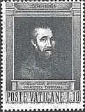

Four years above the chapel floor
Michelangelo began work in 1508 and completed the ceiling in 1512: roughly four demanding years, with interruptions and a significant pause between stages. The finished fresco cycle covers approximately 500 square metres of vaulted surface. It was unveiled on 31 October 1512, on the eve of All Saints’ Day.
To reach the ceiling, Michelangelo worked from a specially designed wooden scaffold supported high above the chapel floor. Contrary to the popular image of an artist painting while lying flat on his back, he generally painted standing, with his head tilted upward and his arms raised. He described the strain in a humorous, bitter poem: his neck, back and body were contorted by the effort, and paint dripped onto his face.
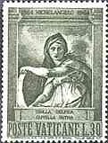
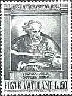
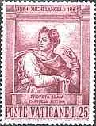
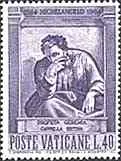
Painting against time — and the prophets on stamps
Fresco painting required pigments to be applied to fresh, damp plaster. Once a section of plaster dried, the opportunity to paint it properly was largely gone. Each day therefore demanded preparation, quick decisions and confident execution. Errors could require the plaster to be removed and the passage repainted.
Michelangelo had to translate small drawings into enormous figures that would remain legible from the chapel floor. The curved vault, difficult viewing angles, changing light and physical isolation compounded the challenge. He employed assistants for some preparatory tasks, but retained exceptionally close control of the design and execution.
The six illustrated pairs of stamps from Burundi reproduce prophets and sibyls from the Sistine Chapel ceiling. They are presented in two groups, allowing the fresco details to be considered alongside the story of Michelangelo’s work.
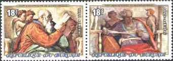
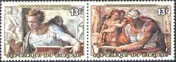
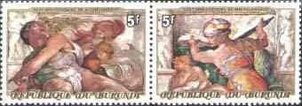
The first three pairs emphasize the dramatic gestures and varied expressions of the prophetic figures. In the next group, the contrasts become especially striking: youthful and aged faces, inward reflection and vigorous movement. Michelangelo used these figures to animate the spaces surrounding the nine Genesis scenes.
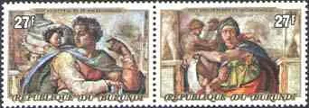
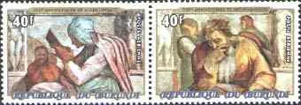
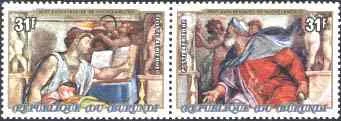
The Sistine Chapel on Paraguayan stamps
Around the Genesis scenes sit seven biblical prophets and five sibyls from the classical world. Michelangelo gave these figures immense bodily presence and individual psychological character. Jeremiah appears weighed down by thought; Isaiah turns with startling vitality; the Delphic Sibyl looks outward as if suddenly alerted.
The sibyls reflect a Renaissance tradition that understood certain voices from antiquity as foretelling the coming of Christ. On the ceiling they join the prophets in a visual bridge between the ancient world and Christian history.
Paraguay also issued individual stamps featuring details from the Sistine Chapel. The first four images move from the Genesis narrative to the imposing figures of the sibyls.
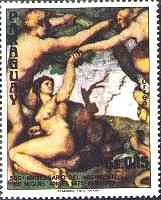
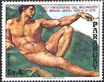
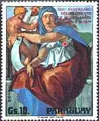
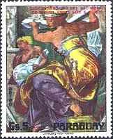
The second group continues the visual story with Adam and Eve, God the Creator and other scenes from the frescoes. Seen together, these stamps show how a vast painted cycle can be explored through individual details.
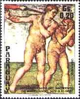
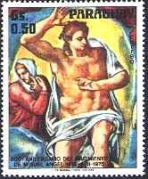
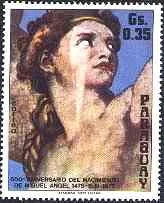
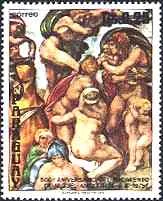
The Creation, Adam and Eve
The nine central panels trace episodes from Genesis, from the creation of the world to the story of Noah. The best-known is The Creation of Adam, in which God reaches toward the reclining first man. The nearly touching hands have become one of the most recognizable images in Western art.
The cycle also includes the Creation of Eve, the Temptation and Expulsion from Eden, and scenes involving Noah. Michelangelo did not simply illustrate a text: he used monumental bodies, gestures and carefully controlled space to express life, freedom, disobedience and human vulnerability.
A masterpiece with a long afterlife
The ceiling was a triumph of invention and endurance, yet it was not Michelangelo’s last intervention in the chapel. More than two decades later, under Pope Paul III, he painted The Last Judgment on the altar wall, working from 1536 to 1541. The ceiling and altar wall are separate projects and should not be confused.
The Sistine Chapel frescoes have been reproduced in books, photographs and postage stamps across the world. These stamps allow collectors to encounter individual prophets, sibyls and Genesis scenes as miniature works of art, each pointing back to an immense painting conceived for an architectural space.